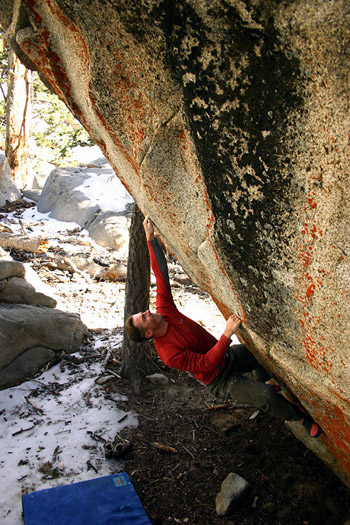

|
e-Grips Routesetting Interview: Louie Anderson 
eG: Where to begin…. So many questions… let’s start with your setting history - How long have you been climbing and setting? Where did you get your start? LA: I’ve been climbing since 1974, having begun in Joshua Tree with a friend of my Dad. Setting came initially in the form of gluing rocks and homemade holds onto a series of “glue-up walls that myself and my friends made to train on here in SoCal prior to the opening of our first climbing gyms. This was around 1988-90. When a small wall opened at a local gymnastics center (Rock and Roll Gym – long since closed) we started putting holds up in order to be able to train there at no charge. Then a larger and more professional gym opened right down the street from my house (Rockreation – Costa Mesa) and I began to set regularly and began to learn just how involved setting really was eG: When did you make your first handholds? What was your inspiration? How did you learn? LA: The first holds I shaped I made using clay or just basic sand casting (dig a hole in the sand and pour in some resin). The resulting holds were used on our glue up walls. The first commercial shaping I did was for Climb It in 1992. There was no one around to tell me how or what to do, so I learned by doing and along the way found out what worked. eG: What would you say is the most challenging part of shaping climbing holds? LA: Because of the fact that I shape for multiple companies, the biggest challenge is in keeping sets unique. It would be very easy to duplicate things I’ve done for different companies, but I try very hard not to do this. I also like to create shapes that have a distinctive visual impact and often times it can be difficult to get the look you want and still have a hold that makes sense when it comes to usage by the setters. eG: Can you name a few of your favorite sets or specific holds you’ve shaped – whether old or new? LA: This is always changing, but: Looking back, I’d have to say that I’m proud of what Scott Rennak and I accomplished with his old company, Crater. We were the first ones to really explore screw on holds and I think our resulting shapes helped greatly to change the industry’s perception of their viability. When I was shaping for Stone Age, I had the freedom to do a lot of feature-sized holds; many more than any other single company was offering at the time. This selection, along with some of the stuff I did for Voodoo and the offerings from Pusher at the same time showed gyms and setters the impact that these larger shapes can have. Finally I’m still psyched on the Limestone and Hueco shapes I did for Climb It. Even being a few years old, they are still a lot of fun to set with and climb on. More currently, I’ve just finished doing some shaping for Project and some of the sets I came up with turned out very good. Also did a huge dual-tex, volcano shape for Halo Holds that will be very popular once word spreads about it. It’s the type of shape I could see every gym wanting at least one of. The whole line of Climb It crimps has been reshaped over the last year or so and they work wonderfully for themed setting. I’m very happy with them. The piggyback/volume shape I did for Climb It is good on steep walls too. I’ve also got a few ideas bouncing around in my head that should be great if I can get the ideas to come to life in foam. eG: What about e-Grips? As a setter – do you have any favorites? As a prolific shaper yourself, any comments on e-Grips designs? LA: Setting wise, I love the footholds and smaller shapes. They are very minor parts of the e-Grips line up, but they can be very intricate and work well when trying to set more technical footwork into my climbs. Using them is a great way to make something harder without changing the handholds much. Shape wise, there are too many good sets to separately mention. Ian and Ty were the first shapers to do shapes that accurately resembled real rock without the holds being overly painful. The amount of detail on those first e-Grips shapes made everyone who saw them sit up and take note. They, and the rest of the e-Grips team, have followed those first shapes up with a continued commitment to creating unique shapes that capture the intricacy of different rock styles very well. Those shapes definitely had an impact on my own shaping and challenged me to try to introduce some of their elements into my own shaping. e-Grips also has a broad line of more abstract shapes that look great and still climb well. As many companies try to make holds that are visually different, often times the usability of the shapes suffer. e-Grips has avoided this trap very well with their sets. eG: So, you officially wrote the book on setting - that was the collaborative brainchild of Scott Rennak and yourself, right? What was the experience like of writing that book? LA: Originally we were going to write the Coursesetting Bible. Once we started working on a basic outline for the book that accurately addressed all of the associated tangents involved, we quickly realized that the project would be a huge undertaking. Scott had a lot going on at the time, as did I, and so I decided to carry on and write a much more scaled-down version of the book myself and talked Scott into writing a section on competition organization drawing on his vast experience in that area. eG: The “Art of Coursesetting” is a great resource that has probably introduced many hundreds or thousands of people to setting. It must be nice to know you have played a role in the instruction and growth of the routesetting community. Do you think anything has changed in routesetting or how you approach it, since you wrote the book? LA: First off, let me say that while I think I am a good setter; I am in no way a setting Guru. I know of dozens of people that could set circles around me. When Scott and I first started talking about writing this book, we did so not because we thought we were better than everyone else, or because we felt that we had so much to teach, but simply because there was very little available information out there for folks looking to learn about setting. What I tried to do with the book was to discuss most of the basic principles, while at the same time intentionally leaving room for different interpretations by the reader. I think that so much of good setting depends on the setter’s creativity and originality. The last thing I wanted to do was to stifle that. I hope that my book has had an impact in the setting world. If nothing else, I hope that it has helped to somewhat educate beginning setters and maybe standardize a bit how they approach the activity. I’ve received many emails from setters around the world that have read and appreciated the book. That alone is a great reward. As to what specifically has changed, I couldn’t say for sure. eG: You also build climbing walls. You must be one of the most experienced routesetters in the world who also builds walls – how does your knowledge of setting affect your design of climbing walls? LA: Immensely. I just finished a design for a new facility here in California that will offer about 12,000 square feet of climbing. I spent a solid week on the gym layout and wall design alone. I look at every angle transition and do everything I can to avoid the type of terrain that will lead to setting difficulties. On a whole, I attempt to make sure that my designs offer as many different angles of climbing as possible in the bouldering, lead climbing and toproping areas, and that the transitions from angle to angle are achieved as seamlessly as possible so as to not interrupt the climbing and setting too drastically. I try to design the type of terrain that I would want to set on, regardless of whether I think I will ever set there or not. We’ve all had to set on walls that were poorly designed and know how much more challenging this makes our task. Because of my setting experience, I’m uniquely positioned to produce designs that are great for climbing and for setting. The more I set, the more time I spend on my designs. It is an ever expanding skill that relies heavily on my setting experiences. eG: I’ve been to a number of the Southern California gyms, and it seems like there is a theme of shorter walls, but often with steep roof sections? It must be fun to set on these walls. What are your thoughts on wall designs in the US overall – what improvements do you think could be made on new designs coming out now, overall? LA: I think that many of the So Cal gym owners rushed to open their facilities and settled for shorter buildings than they needed to. Due to the short ceiling height, many of these gyms have opted for steeper terrain in order to offer longer climbs. While it’s fun to set and climb on these steep angles, I would rather see people hold out until they find taller and more open buildings. These offer far fewer limitations when designing the walls and allow for more variety in the wall angles. I’m happy to say that all of the newer gyms seem more focused in this direction. There are also more open wall planes and an emphasis on not overcrowding the facility. As an example, a gym that could have been built ten years ago may have crammed 10,000 square feet of climbing terrain into their space and resulted with a somewhat claustrophobic space full of small, choppy angle transitions and wall panels. The same gym today may only offer 8,500 square feet of wall space, but be filled with larger planes and smooth transitions. This newer gym would also have more room between the climbing structures and a much more open feel to the gym. In my mind this is a huge step in the right direction. The focus should be on the quality of the climbing terrain being offered, not the quantity. eG: Lastly, there must be some crazy setting stories from your past… will you give us a nugget? Scariest? Most surprising? Most fun? LA: I think that many of the So Cal gym owners rushed to open their facilities and settled for shorter buildings than they needed to. Due to the short ceiling height, many of these gyms have opted for steeper terrain in order to offer longer climbs. While it’s fun to set and climb on these steep angles, I would rather see people hold out until they find taller and more open buildings. These offer far fewer limitations when designing the walls and allow for more variety in the wall angles. I’m happy to say that all of the newer gyms seem more focused in this direction. There are also more open wall planes and an emphasis on not overcrowding the facility. As an example, a gym that could have been built ten years ago may have crammed 10,000 square feet of climbing terrain into their space and resulted with a somewhat claustrophobic space full of small, choppy angle transitions and wall panels. The same gym today may only offer 8,500 square feet of wall space, but be filled with larger planes and smooth transitions. This newer gym would also have more room between the climbing structures and a much more open feel to the gym. In my mind this is a huge step in the right direction. The focus should be on the quality of the climbing terrain being offered, not the quantity. eG: So, you must have set on dozens of walls you’ve built. What is your favorite type of route or boulder problem to set? Do you lean towards specific terrain? Grades? Movement patterns? Do you have a particular style? LA: I’m pretty comfortable setting on all angles, but I guess my favorites would be those between 10 and 35 degrees overhung. These are the angles I like to climb on the most, so I probably prefer them for setting as well. My setting tends to be a little more technical and foothold driven than some other people’s styles. Very seldom can you just plant and foot and jump on my climbs. Instead there will usually be some elements of balance and/or technique required to generate movement and more often than not that begins at the feet. I probably lean more towards stamina/resistance setting, where there is an accumulated difficulty over several moves rather than generating the climb’s difficulty in just a single sequence or set of individual moves. If forced to choose, I probably prefer crimps and slopers. eG: It sounds like you are always busy – do you have any time to set routes these days? If so, where at? LA: I set for many of the SoCal area comps and occasionally at the gyms I frequent (Hangar 18, Rock City) close to home. I honestly don’t spend a lot of time in the gym anymore as there is very good climbing under an hour from me, but when I do visit the gyms I will usually set something while I’m there if for no other reason than to have a new project for the group to work on that evening. eG: Do you still set for competitions? What changes have you seen in competition setting over the years? Any thoughts on the future of competitions? LA: Yes, I do, in fact we just wrapped up Hangar 18’s annual ABS comp yesterday. I was the organizer and head setter for the event and it was a smashing success. We set 100 problems for just over 140 competitors and dozens of the climbers came up to me after the comp and commented on the high quality of the problems. The event went smoothly and saw an increase in popularity (by about 20 climbers) over last year’s event. The overall quality of comp setting is much higher than in years past. I think in a large part to the fact that climbing gyms place more value and emphasis on their setting programs than they used to. They realize that they are selling a product to the public in the form of the climbs being set. They are much more likely to hire setters from outside their own facility’s talent pool for comps and collectively this compiled setting team brings a higher level of setting to the events. Locally, we see an increase every year in not only the number of events, but the number of climbers attending those events. I have no doubt that this trend will continue for many years to come. New gyms are also incorporating spectator areas and comp-friendly environments into their initial facility designs and as more and more of these new generation gyms open I think we’ll see even better events. eG: Lastly, since you’ve been a mentor to so many in the setting world – how about some advice to new setters. If you had to pick a couple different sequences of climbing moves to learn that you might suggest people learn to master, that might most help people learn about setting and how to create interesting movement – what would they be? LA: Don’t forget about the feet. Learn how the use and positioning of footholds can affect and control the movement on your climbs. You can use your climbs as the conduit to teach climbers more about footwork and balance. Instead of just bolting on a foothold to act as a “launching pad” for the next move, try using somewhat directional footholds that force the climber to think about their foot placement. Position the footholds off to the side or higher or lower than where you would normally place them. Learn how adjusting this position affects the difficulty and intensity of the movement. The old pattern of using small holds, placed far apart to achieve harder climbs is no longer acceptable. Take the time to learn how to set easier climbs using bad handholds and harder climbs using big positive handholds. Both can be done if you take the time to explore the relationships between handhold and foothold sizing. Once you can add this type of setting skill to your repertoire you will be far less limited by your hold selection and will likely be appreciated for setting a broader range of climbing styles than your peers. |